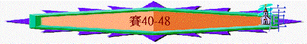

|
在 黑 暗 時 代 中 的 信 息（1-66） |
|||||
|
在變質國度中的斥責 |
在君亡噩訊中的異象 |
在無助孤身中的應許 |
在爭戰世界中的預言 |
在危難困境中的經歷 |
在暗淡前景中的安慰 |
|
1-5 |
6 |
7-12 |
13-35 |
36-39 |
40-66 |
＊時期：可能是希西家作王十四年後的時期（因之前是講希西家的經歷，另外內文中少題亞述，多題巴比倫，似乎巴比倫漸興起）
＊背景：北國已滅，南國又如何？部份以色列人被擄，前面39章以賽亞曾對希西家說，選民將被擄
巴比倫。
＊問題：選民前景暗淡（內文有很多關乎『黑暗』、『道路』字眼），他們感覺耶和華隱藏他們的道路（40:27）
＊內容：很多『安慰』『光明』『救恩』『指示』『指明』『平安』字眼，似乎中心點是宣告安慰平安的信息。
＊真理：真正安慰、救恩、平安源頭在乎認識我們的救主（也有很多『知道』『看哪』『認識』
『救主』『救贖主』字眼）
＊結構：－>分開3段，每段以惡人沒好結果為結束（48:22，57:21，66:24），似乎
暗示不認識主的惡人有惡果，相反認識主，倚靠主的人必得安慰。
－>每段都有一些獨特，重覆的字眼：
e.g.
40－48－－>多『偶像』『再沒有別神』字眼
49－57－－>『耶和華的膀臂』『僕人』
58－66－－>多『公義』『報仇』等字
－>每段都針對他們的特別問題
－>每段都有不同真理重點
40－48－－>認識無可比的真神
49－57－－>認識大能的救主
58－66－－>認識公義的主宰
＊中心經文：『報好信息給錫安的阿，你要登高山，報好信息給耶路撒冷．．．．看哪，你們的神。主耶和華必像大能者臨到，祂的膀臂必為祂掌權，祂的賞賜在祂那裏，祂的報應在祂面前。』40:9－10
引言—安慰信息的宣告(40:1-11)
＊多『喊叫』『揚聲』『喊著說』『極力揚聲』『安慰的話』『好信息』類似字眼
「你們的神說：你們要安慰，安慰我的百姓。」40:1
A.艱難已完結
「要對耶路撒冷說安慰的話，又向他宣告說，他爭戰的日子已滿了；他的罪孽赦免了；他為自己的一切罪，從耶和華手中加倍受罰。」40:2
～神管教以色列人的日子已滿了，選民終必得赦免
B.工程要展開
「有人聲喊著說：在曠野預備耶和華的路（或作：在曠野，有人聲喊著說：當預備耶和華的路），在沙漠地修平我們神的道。一切山窪都要填滿，大小山岡都要削平；高高低低的要改為平坦，崎崎嶇嶇的必成為平原。」40:3-4
「他說、我就是那在曠野有人聲喊著說、修直主的道路、正如先知以賽亞所說的。」約1:23
～是呼召百姓要展開工程，預備神要來到他們中間的道路
～此段也預表施洗約翰要作基督的先鋒，預備主在世的道路
C.真神終降臨
a.耶和華必顯現
「耶和華的榮耀必然顯現；凡有血氣的必一同看見；因為這是耶和華親口說的。」40:5
～真正的安慰是神親臨在選民中間，帶來真正的復興
b.神的話必立定
「草必枯乾、花必凋殘、惟有我們 神的話、必永遠立定。」40:8
～神降臨的應許，神話語的預言必會應驗，地上的植物會廢去，但神的話必堅定
c.耶和華必掌權
「主耶和華必像大能者臨到；他的膀臂必為他掌權。他的賞賜在他那裡；他的報應在他面前。」40:10
d.耶和華必牧養
「他必像牧人牧養自己的羊群，用膀臂聚集羊羔抱在懷中，慢慢引導那乳養小羊的。」40:11
1.認識無可比的真神(40:12-48:22)
＊針對選民的質疑：『．．．．我的道路向耶和華隱藏．．．．我的冤屈神並不查問』
＊針對選民的問題：求問偶像
＊常用類似的字句：『除了我以外，沒有別神』
『誰能像我宣告，並且指明，又為自己陳說呢？讓他將未來的事和必成就的事說明』
A.神的無可比與人的問題(40:12-31)
a.神的無可比
(1)人與神的無可比
(A)從神的創造而看
「誰曾用手心量諸水，用手虎口量蒼天，用升斗盛大地的塵土，用秤稱山嶺，用天平平岡陵呢？」40:12
～「手虎口」----五指伸開時由大胟指至尾指距離
～「升斗」----量器，容量約1/
～此段人不能量度神所創造的天與地
(B)從神的智慧而看
「誰曾測度耶和華的心（或作：誰曾指示耶和華的靈），或作他的謀士指教他呢？他與誰商議，誰教導他，誰將公平的路指示他，又將知識教訓他，將通達的道指教他呢？」40:13-14
(C)從神的偉大而看
「看哪，萬民都像水桶的一滴，又算如天平上的微塵；他舉起眾海島，好像極微之物。利巴嫩的樹林不夠當柴燒；其中的走獸也不夠作燔祭。萬民在他面前好像虛無，被他看為不及虛無，乃為虛空。」40:15-17
(2)偶像與神無可比
「你們究竟將誰比神，用什麼形像與神比較呢？」40:18
(A)偶像只是人所造的
「偶像是匠人鑄造，銀匠用金包裹，為他鑄造銀鍊。」40:19
(B)神卻是創造掌權者
「你們豈不曾知道嗎？你們豈不曾聽見嗎？從起初豈沒有人告訴你們嗎？自從立地的根基，你們豈沒有明白嗎？神坐在地球大圈之上；地上的居民好像蝗蟲。他鋪張穹蒼如幔子，展開諸天如可住的帳棚。」40:21-22
「那聖者說：你們將誰比我，叫他與我相等呢？你們向上舉目，看誰創造這萬象，按數目領出，他一一稱其名；因他的權能，又因他的大能大力，連一個都不缺。」40:25-26
～神才是創造天地，掌管全地及穹蒼之主
b.人的問題
(1)人的質疑
「雅各啊，你為何說，我的道路向耶和華隱藏？以色列啊，你為何言，我的冤屈神並不查問？」40:27
～從此句話可猜測當時的人以為神不理他們，他們的前景暗淡，不知方向，神也可能不知到他們的將來，神也沒有查問他們的寃枉，神也不能處理敵人欺壓以色列的案件
(2)神的超越
(A)超越人的時間
「你豈不曾知道嗎？你豈不曾聽見嗎？永在的神耶和華，創造地極的主，並不疲乏，也不困倦；他的智慧無法測度。」40:28
(B)超越人的智慧
(C)超越人的軟弱
「疲乏的，他賜能力；軟弱的，他加力量。就是少年人也要疲乏困倦；強壯的也必全然跌倒。但那等候耶和華的必從新得力。他們必如鷹展翅上騰；他們奔跑卻不困倦，行走卻不疲乏。」40:29-31
～人會困乏，但神不會，人會軟弱，人會軟弱，會跌倒，但來到大能的神面前，必重新得力
B.神的全知與偶像的虛無(41-48)
＊結構內容：＜神從起初指明＞
－> ＜神親自成就＞ －>
＜偶像虛無＞／＜人的問題＞
a.從列國的命運而看(41)
「眾海島啊，當在我面前靜默；眾民當從新得力，都要近前來才可以說話，我們可以彼此辯論。」41:1
～回應之前所說人來到神面前等候必從新得力，41:1要人來到神面前，等候神的預告，認識神的全知，認識神能預先指明將來的事，他們無可爭議
(1)神預先指明
「誰從東方興起一人，憑公義召他來到腳前呢？耶和華將列國交給他，使他
(A)從東方興起一人
～東方應指波斯王古列
(B)神將列國交與他
～神是全知的神，神預早已將波斯王的事指明給他們看
(2)神親自成就
(A)神興起古列
(B)神幫助選民
(a)不棄選民
「你是我從地極所領（原文作抓）來的，從地角所召來的，且對你說：你是我的僕人；我揀選你，並不棄絕你。」41:9
(b)扶持選民
「你不要害怕，因為我與你同在；不要驚惶，因為我是你的神。我必堅固你，我必幫助你；我必用我公義的右手扶持你。」41:10
(c)擊退敵人
「看哪，我已使你成為有快齒打糧的新器具；你要把山嶺打得粉碎，使岡陵如同糠秕。」41:15
(d)恩澤地土
「我要在淨光的高處開江河，在谷中開泉源；我要使沙漠變為水池，使乾地變為湧泉。我要在曠野種上香柏樹、皂莢樹、番石榴樹，和野橄欖樹。我在沙漠要把松樹、杉樹，並黃楊樹一同栽植；好叫人看見、知道、思想、明白；這是耶和華的手所做的，是以色列的聖者所造的。」41:18-20
～人從以上發生的事，看到神不是不理選民，是親自工作的
(3)偶像的虛無
「他們各人幫助鄰舍，各人對弟兄說：壯膽吧！」41:6
～列邦在東方興起的王威脅中，感到害怕，他們尋求偶像的幫助(製造偶像)
(A)偶像不能知將來必遇的事
「耶和華對假神說：你們要呈上你們的案件；雅各的君說：你們要聲明你們確實的理由。可以聲明，指示我們將來必遇的事，說明先前的是什麼事，好叫我們思索，得知事的結局，或者把將來的事指示我們。要說明後來的事，好叫我們知道你們是神。你們或降福，或降禍，使我們驚奇，一同觀看。」41:21-23
(B)偶像不能知神將興起的人
「我從北方興起一人；他是求告我名的，從日出之地而來。他必臨到掌權的，好像臨到灰泥，彷彿窯匠踹泥一樣。誰從起初指明這事，使我們知道呢？誰從先前說明，使我們說他不錯呢？誰也沒有指明；誰也沒有說明；誰也沒有聽見你們的話。」41:25-26
「看哪，他們和他們的工作都是虛空，且是虛無。他們所鑄的偶像都是風，都是虛的。」41:29
～北方----波斯也是在猶大的東北方
b.從義僕的來臨而看(42)
「我是耶和華，這是我的名；我必不將我的榮耀歸給假神，也不將我的稱讚歸給雕刻的偶像。看哪，先前的事已經成就，現在我將新事說明，這事未發以先，我就說給你們聽。」42:8-9
～神預先指明祂會興起另一義僕，這事情是偶像不能知到的
(1)神預先指明
(A)義僕的內涵
「看哪，我的僕人我所扶持所揀選、心裡所喜悅的！我已將我的靈賜給他；他必將公理傳給外邦。他不喧嚷，不揚聲，也不使街上聽見他的聲音。壓傷的蘆葦，他不折斷；將殘的燈火，他不吹滅。他憑真實將公理傳開。」42:1-3
「耶穌知道了，就離開那裡，有許多人跟著他。他把其中有病的人都治好了；又囑咐他們，不要給他傳名。這是要應驗先知以賽亞的話，說：看哪！我的僕人，我所揀選，所親愛，心裡所喜悅的，我要將我的靈賜給他；他必將公理傳給外邦。」太12:15-18
～此義僕是指耶穌基督，祂將來到世間
～而祂的內涵是不喧嚷，滿憐憫的
(B)義僕的工作
(a)將真理傳開
「壓傷的蘆葦，他不折斷；將殘的燈火，他不吹滅。他憑真實將公理傳開。」42:3
(b)作眾民中保
「我耶和華憑公義召你，必攙扶你的手，保守你，使你作眾民的中保（中保：原文作約），作外邦人的光，」42:6
(c)外邦人之光
「開瞎子的眼，領被囚的出牢獄，領坐黑暗的出監牢。」42:7
(2)神親自成就
(A)扶持義僕
「看哪，我的僕人我所扶持所揀選、心裡所喜悅的！我已將我的靈賜給他；他必將公理傳給外邦。」42:1
「我耶和華憑公義召你，必攙扶你的手，保守你，使你作眾民的中保（中保：原文作約），作外邦人的光，」42:6
(B)攻擊仇敵
「耶和華必像勇士出去，必像戰士激動熱心，要喊叫，大聲吶喊，要用大力攻擊仇敵。」42:13
(C)引領百姓
「我要引瞎子行不認識的道，領他們走不知道的路；在他們面前使黑暗變為光明，使彎曲變為平直。這些事我都要行，並不離棄他們。」42:16
(3)偶像的虛無
「倚靠雕刻的偶像，對鑄造的偶像說：你是我們的神；這等人要退後，全然蒙羞。」42:17
(4)人的無知
「你們這耳聾的，聽吧！你們這眼瞎的，看吧！使你們能看見。」42:18
～神是全知全能的神，但祂的百姓卻愚昧無知，受管教下也不曉得神，也不知自己遭神教是因為自己不肯聽從祂的話
(A)見神的作為----卻不領命
「誰比我的僕人眼瞎呢？誰比我差遣的使者耳聾呢？誰瞎眼像那與我和好的？誰瞎眼像耶和華的僕人呢？你看見許多事卻不領會，耳朵開通卻不聽見。」42:19-20
～以色列人比其他邦國的人更能看見神的作為與神的管教，但他們像瞎眼的人，沒從看見的經歷中，領受提醒與教訓
(B)有神的訓誨----卻不聽從
「你們中間誰肯側耳聽此，誰肯留心而聽，以防將來呢？誰將雅各交出當作擄物，將以色列交給搶奪的呢？豈不是耶和華嗎？就是我們所得罪的那位。他們不肯遵行他的道，也不聽從他的訓誨。」42:23-24
(C)遭神的烈怒----還不知道
「所以，他將猛烈的怒氣和爭戰的勇力傾倒在以色列的身上。在他四圍如火著起，他還不知道，燒著他，他也不介意。」42:25
c.從選民被交出而看(43:1-13)
(1)神預先指明
「我要對北方說、交出來．對南方說、不要拘留．將我的眾子從遠方帶來、將我的眾女從地極領回、」43:6
「任憑萬國聚集、任憑眾民會合、其中誰能將此聲明、並將先前的事說給我們聽呢．他們可以帶出見證來、自顯為是、或者他們聽見便說、這是真的。」43:9
～神預先講給他們知將來選民會從四方被招聚出來
(2)神親自成就
(A)神必同在
「雅各啊，創造你的耶和華，以色列啊，造成你的那位，現在如此說：你不要害怕！因為我救贖了你。我曾提你的名召你，你是屬我的。你從水中經過，我必與你同在；你逿過江河，水必不漫過你；你從火中行過，必不被燒，火焰也不著在你身上。」43:1-2
(B)神必拯救
「我要對北方說，交出來！對南方說，不要拘留！將我的眾子從遠方帶來，將我的眾女從地極領回，就是凡稱為我名下的人，是我為自己的榮耀創造的，是我所做成，所造作的。」43:6-7
(3)選民的醒覺
(A)神是獨一的神
「耶和華說：你們是我的見證，我所揀選的僕人。既是這樣，便可以知道，且信服我，又明白我就是耶和華。在我以前沒有真神（真：原文作造作的）；在我以後也必沒有。」43:10
(B)神是獨一的拯救
「惟有我是耶和華；除我以外沒有救主。我曾指示，我曾拯救，我曾說明，並且在你們中間沒有別神。所以耶和華說：你們是我的見證。我也是神；」43:11-12
d.從巴比倫傾覆而看(43:14-44:28)
(1)神預先指明
「耶和華你們的救贖主、以色列的聖者如此說：因你們的緣故，我已經打發人到巴比倫去；並且我要使迦勒底人如逃民，都坐自己喜樂的船下來。」43:14
「看哪，我要做一件新事；如今要發現，你們豈不知道嗎？我必在曠野開道路，在沙漠開江河。」43:19
「自從我設立古時的民，誰能像我宣告，並且指明，又為自己陳說呢？讓他將未來的事和必成的事說明。」44:7
～神一早預言巴比倫如逃民，用他們宴樂的船逃去
～神也開路，使選民可以回歸
(2)神親自成就
(A)神開路
「看哪，我要做一件新事；如今要發現，你們豈不知道嗎？我必在曠野開道路，在沙漠開江河。」43:19
(B)神澆灌
「造做你，又從你出胎造就你，並要幫助你的耶和華如此說：我的僕人雅各，我所揀選的耶書崙哪，不要害怕！因為我要將水澆灌口渴的人，將河澆灌乾旱之地。我要將我的靈澆灌你的後裔，將我的福澆灌你的子孫。
他們要發生在草中，像溪水旁的柳樹。」44:2-4
～耶書崙----以色列的暱稱，有譯親愛的以色列
(3)選民的無理
(A)自以為有義不應受懲罰
「你要提醒我，你我可以一同辯論；你可以將你的理陳明，自顯為義。」43:26
(B)事實敗壞顯明該受咒詛
「雅各啊，你並沒有求告我；以色列啊，你倒厭煩我。你沒有將你的羊帶來給我作燔祭，也沒有用祭物尊敬我；我沒有因供物使你服勞，也沒有因乳香使你厭煩。」43:22-23
「你的始祖犯罪；你的師傅違背我。所以，我要辱沒聖所的首領，使雅各成為咒詛，使以色列成為辱罵。」43:27-28
(4)偶像的虛無
「製造雕刻偶像的盡都虛空；他們所喜悅的都無益處；他們的見證無所看見，無所知曉，他們便覺羞愧。」44:9
(A)造偶像的人也只是人
「看哪，他的同伴都必羞愧。工匠也不過是人，任他們聚會，任他們站立，都必懼怕，一同羞愧。」44:11
(B)造偶像的人也有限制
「鐵匠把鐵在火炭中燒熱，用鎚打鐵器，用他有力的膀臂錘成；他飢餓而無力，不喝水而發倦。」44:12
～他們也會疲乏，也會飢渴，也會無力
(C)造偶像的人自圓其說
「他把一分燒在火中，把一分烤肉吃飽。自己烤火說：「啊哈，我暖和了，我見火了。」他用剩下的做了一神，就是雕刻的偶像。他向這偶像俯伏叩拜，禱告他說：「求你拯救我，因你是我的神。」44:16-17
(D)造偶像的愚昧無知
「誰心裡也不醒悟，也沒有知識，沒有聰明，能說：「我曾拿一分在火中燒了，在炭火上烤過餅；我也烤過肉吃。這剩下的，我豈要作可憎的物嗎？我豈可向木子叩拜呢？」」44:19
(E)拜偶像者盡都徒然
「他以灰為食，心中昏迷，使他偏邪，他不能自救，也不能說：「我右手中豈不是有虛謊嗎？」」44:20
(5)真正的倚靠
～他們真正要歸向的不是偶像，而是以色列的神，因為
(A)神才是他們的主
「雅各，以色列啊，你是我的僕人，要記念這些事。以色列啊，你是我的僕人，我造就你必不忘記你。」44:21
～偶像只是有限的人手所造，不是他們的主，耶和華才是他們的主，他們的神，以色列是神的僕人
(B)神才是救贖的主
「我塗抹了你的過犯，像厚雲消散；我塗抹了你的罪惡，如薄雲滅沒。你當歸向我，因我救贖了你。諸天哪，應當歌唱，因為耶和華做成這事。地的深處啊，應當歡呼；眾山應當發聲歌唱；樹林和其中所有的樹都當如此！因為耶和華救贖了雅各，並要因以色列榮耀自己。」44:22-23
(C)神才是建立之主
(a)神建立祂的僕人
「使我僕人的話語立定，我使者的謀算成就。論到耶路撒冷說：必有人居住；論到猶大的城邑說：必被建造，其中的荒場我也必興起。」44:26
(b)神建立祂的聖城
「論古列說：他是我的牧人，必成就我所喜悅的，必下令建造耶路撒冷，發命立穩聖殿的根基。」44:28
～此處題及波斯王古列，下文也交帶
e.從古列的興起而看(45)
「論古列說：他是我的牧人，必成就我所喜悅的，必下令建造耶路撒冷，發命立穩聖殿的根基。」44:28
(1)神預先指明
「我耶和華所膏的古列；我攙扶他的右手，使列國降伏在他面前。我也要放鬆列王的腰帶，使城門在他面前敞開，不得關閉。我對他如此說：」45:1
「你們要述說陳明你們的理，讓他們彼此商議。誰從古時指明？誰從上古述說？不是我耶和華嗎？除了我以外，再沒有神；我是公義的神，又是救主；除了我以外，再沒有別神。」45:21
「波斯王古列第三年，有事顯給稱為伯提沙撒的但以理。這事是真的，是指著大爭戰；但以理通達這事，明白這異象。」但10:1
「波斯王古列元年，耶和華為要應驗藉耶利米口所說的話，就激動波斯王古列的心，使他下詔通告全國說：「波斯王古列如此說：『耶和華天上的神已將天下萬國賜給我，又囑咐我在猶大的耶路撒冷為他建造殿宇。」拉1:1-2
～以賽亞書45章的年代是南國希西家作王年代，神已早說明波斯王古列會重建聖殿(當時南國及聖殿仍在，古列王仍未在世中)
(2)神親自成就
(A)成就事情
(a)列國降服古列
「我耶和華所膏的古列；我攙扶他的右手，使列國降伏在他面前。我也要放鬆列王的腰帶，使城門在他面前敞開，不得關閉。我對他如此說：」45:1
(b)寶物歸於古列
「我要將暗中的寶物和隱密的財寶賜給你，使你知道提名召你的，就是我耶和華、以色列的神。」45:3
(c)古列釋放選民
「我憑公義興起古列（原文作他），又要修直他一切道路。他必建造我的城，釋放我被擄的民；不是為工價，也不是為賞賜。這是萬軍之耶和華說的。」45:13
(d)埃及降服古列
「耶和華如此說：埃及勞碌得來的和古實的貨物必歸你；身量高大的西巴人必投降你，也要屬你。他們必帶著鎖鍊過來隨從你，又向你下拜，祈求你說：神真在你們中間，此外再沒有別神；再沒有別的神。」45:14
～古實西巴代表整個埃及
(B)成就原因
(a)使古列認識耶和華
「我要將暗中的寶物和隱密的財寶賜給你，使你知道提名召你的，就是我耶和華、以色列的神。」45:3
(b)因為以色列的原故
「因我僕人雅各，我所揀選以色列的緣故，我就提名召你；你雖不認識我，我也加給你名號。」45:4
～神要興起古列，目的是藉他拯救選民
(c)使萬民認識耶和華
「從日出之地到日落之處使人都知道除了我以外，沒有別神。我是耶和華；在我以外並沒有別神。」45:6
(d)因神有祂的自主權
「禍哉，那與造他的主爭論的！他不過是地上瓦片中的一塊瓦片。泥土豈可對摶弄他的說：你做什麼呢？所做的物豈可說：你沒有手呢？禍哉，那對父親說：你生的是什麼呢？或對母親（原文作婦人）說：你產的是什麼呢？」45:9-10
～或許人會質疑神為何藉外邦人拯救選民，但神有祂的主權，如泥土豈可吃搏弄它的說：「你作甚麼呢？」
(3)偶像的虛無
(A)敬拜偶像必蒙羞
「凡製造偶像的都必抱愧蒙羞，都要一同歸於慚愧。」45:16
「你們從列國逃脫的人，要一同聚集前來。那些抬著雕刻木偶、禱告不能救人之神的，毫無知識。」45:20
(B)人認識誰是真神
「你們要述說陳明你們的理，讓他們彼此商議。誰從古時指明？誰從上古述說？不是我耶和華嗎？除了我以外，再沒有神；我是公義的神，又是救主；除了我以外，再沒有別神。」45:21
「人論我說，公義、能力，惟獨在乎耶和華；人都必歸向他。凡向他發怒的必至蒙羞。」45:24
～當日列國的人認識除以色列的神外，別無真神，人認識祂的公義，能力，人也會仰望祂，敬拜讚美祂
f.從巴比倫敗落而看(46-47)
(1)神預先指明
「你們要追念上古的事、因為我是 神、並無別神、我是 神、再沒有能比我的。我從起初指明末後的事、從古時言明未成的事、說、我的籌算必立定、凡我所喜悅的、我必成就。」46:9-10
(2)神親自成就
(A)以色列得神保佑
「雅各家、以色列家一切餘剩的、要聽我言、你們自從生下、就蒙我保抱、自從出胎、便蒙我懷搋。直到你們年老、我仍這樣、直到你們髮白、我仍懷搋。我已造作、也必保抱、我必懷抱、也必拯救。」46:3-4
(B)巴比倫得神懲罰
(a)刑罰的內容
「巴比倫的處女啊，下來坐在塵埃；迦勒底的閨女啊，沒有寶座，要坐在地上；因為你不再稱為柔弱嬌嫩的。」47:1
「你的下體必被露出；你的醜陋必被看見。我要報仇，誰也不寬容。」47:3
「哪知，喪子、寡居這兩件事在一日轉眼之間必臨到你；正在你多行邪術、廣施符咒的時候，這兩件事必全然臨到你身上。」47:9
「因此，禍患要臨到你身；你不知何時發現（或作：如何驅逐）災害落在你身上，你也不能除掉；所不知道的毀滅也必忽然臨到你身。」47:11
～用處女代表巴比倫強盛的王朝，遭神報仇，至終受蒙羞，人滅亡，國被毁
(b)受罰的原因
＊不憐憫以色列
「迦勒底的閨女啊，你要默然靜坐，進入暗中，因為你不再稱為列國的主母。我向我的百姓發怒，使我的產業被褻瀆，將他們交在你手中，你毫不憐憫他們，把極重的軛加在老年人身上。」47:5-6
＊心中自誇偏邪
「你素來倚仗自己的惡行，說：無人看見我。你的智慧聰明使你偏邪，並且你心裡說：惟有我，除我以外再沒有別的。」47:10
(3)偶像的虛無
(A)成為巴比倫重擔
「彼勒屈身，尼波彎腰；巴比倫的偶像馱在獸和牲畜上。他們所抬的如今成了重馱，使牲畜疲乏，都一同彎腰屈身，不能保全重馱，自己倒被擄去。」46:1-2
～彼勒與尼波是巴比倫的主要偶像，他們不能救巴比倫，而且在巴比倫走難時，人將偶像伏在牲畜上，成為重擔
(B)不能應允人所求
「他們將神像抬起，扛在肩上，安置在定處，他就站立，不離本位；人呼求他，他不能答應，也不能救人脫離患難。」46:7
(C)勞神之事終徒然
「他們要像碎稓被火焚燒，不能救自己脫離火焰之力；這火並非可烤的炭火，也不是可以坐在其前的火。你所勞神的事都要這樣與你無益；從幼年與你貿易的也都各奔各鄉，無人救你。」47:14-15
總結(48)
(1)人的問題
「雅各家，稱為以色列名下，從猶大水源出來的，當聽我言！你們指著耶和華的名起誓，提說以色列的神，卻不憑誠實，不憑公義。」48:1
(A)不誠實
～對神的敬拜是假，也敬拜偶像，他沒有持守與神的約
(B)不公義
～選民有行惡，不義的事
(2)神的總結
(A)人不誠實，但神仍是可信的
(a)祂會成就祂所說的
「主說：早先的事，我從古時說明，已經出了我的口，也是我所指示的；我忽然行做，事便成就。」48:3
(b)神預早指明將來事
「所以，我從古時將這事給你說明，在未成以先指示你，免得你說：這些事是我的偶像所行的，是我雕刻的偶像和我鑄造的偶像所命定的。你已經聽見，現在要看見這一切；你不說明嗎？從今以後，我將新事，就是你所不知道的隱密事指示你。這事是現今造的，並非從古就有；在今日以先，你也未曾聽見，免得你說：這事我早已知道了。」48:5-7
～叫人不將榮耀歸與假神及自己，原來真正可信的不是這些，而是全知的神
(c)神會拯救以色列人
「你們要從巴比倫出來，從迦勒底人中逃脫，以歡呼的聲音傳揚說：耶和華救贖了他的僕人雅各！你們要將這事宣揚到地極。」48:20
(B)人不公義，但神仍有公義的
(a)祂會審判巴比倫
「你們都當聚集而聽，他們（或作：偶像）內中誰說過這些事？耶和華所愛的人必向巴比倫行他所喜悅的事；他的膀臂也要加在迦勒底人身上。惟有我曾說過，我又選召他，領他來，他的道路就必亨通。」48:14-15
(b)行公義者必蒙福
「甚願你素來聽從我的命令！你的平安就如河水；你的公義就如海浪。你的後裔也必多如海沙；你腹中所生的也必多如沙粒。他的名在我面前必不剪除，也不滅絕。」48:18-19
(c)行惡者不得平安
「耶和華說：惡人必不得平安！」48:22